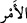
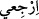

“Göğün ve yerin O’nun buyruğu” yâni Allah Teâlâ’nın irâdesi “ile durması”
durmaları için takdîr edilen ecele/süreye, yâni kıyâmet gününe kadar bulundukları şekil
ve durumlarda oldukları hal üzere kıyâmı ve devâmı “da O’nun (varlığının)
delillerindendir.”
İrâdemin ‘emir/buyruk’ diye ifâde edilmesi, Allâh’ın kudretinin kemâline, şartlara ve
sebeplere muhtaç olmadığına delâlet etmek içindir. “__WORD__ kelimesi, bütün fiiller ve
sözler için kullanılır/geneldir. Nitekim el-Müfredât’ta böyle geçmektedir.
“Sonra sizi topraktan bir çağırdı mı” yâni siz kabirlerinizdeyken ecel/müddet
bittikten sonra: “Ey ölüler, dışarı çıkın/kalkın!” buyurarak bir kere sizi çağırdı mı
“hemen” durmadan ve yüz çevirmeden “(kabirlerinizden) çıkıverirsiniz.” Nitekim
başka bir âyette: “O gün dâvetçiye (İsrafil’e) uyacaklar.” (Tâhâ, 20/108)
buyrulmaktadır.
Aslında çağıran İsrafil (a.s.)’dır. Çünkü o Beytü’l-makdis’teki kayanın üzerinde son
defa sûra üflediği zaman mahlûkâtı çağırır.
Âyette kalb semâsına, nefis arzına/yerine ve onların ruh ile kâim olmalarına işâret
vardır. Çünki ruh emir âlemindendir ve “__WORD__ Dön” (el-Fecr, 89/28) hitâbının
cezbesine bağlıdır. Çünkü Allah Teâlâ nefis, kalb ve ruhu bu cezbe ile çağırdığında
varlık enâniyyeti kabirlerinden çıkıp hüviyyet ve şühûd arsasına çıkarlar. Bu ahassu’l-
havâssın haşridir. Çünkü haşrin mertebeleri vardır: Umûmun (âmmın) mertebesi,
cesedlerin diriliş günü kabirlerden mahşere çıkmasıdır. Hâssın mertebesi, uhrevî
ruhların hâl-i hayatlarında seyr u sülûk ile dünyevî cisimlerin kabirlerinden rûhâniyet
âlemine çıkmasıdır. Çünkü onlar ölmeden önce kendi irâdeleriyle hayvânî-nefsânî
sıfatlardan ölmüşlerdir. Ehassın mertebesi, rûhânî enâniyyet kabirlerinden rabbânî
hüviyyete çıkmaktır ki Habîb’in makamıdır. O olmaksızın Allah ile bâkî kalır.
Mesnevî’de der ki:
Dikkat et, çünkü veliler zamanın İsrâfîl’idirler.
Ölüler onlardan hayat bulup gelişirler.
Her ölünün canı, beden mezarında kefen içinde
Olduğu hâlde onların sesinden sıçrayıp kalkar.
Bu ses öbür sesten bambaşka, der.
Çünkü diriltmek Allah sesinin işidir.
Biz öldük, tamamen eksilip yok olduk.
Allah sesi gelince hepimiz dirilip kalktık.
Allah sesi ister perde arkasından gelsin ister perdesiz,
Meryem’e yakasından ne verdiyse onu verir.
Ey yolculuğun derileri altında yok ettiği kimseler!
Sevgilinin sesiyle yokluktan geri dönün.
O ses, Allah kulunun boğazından çıktıysa da
Kesinlikle padişaha âiddir.